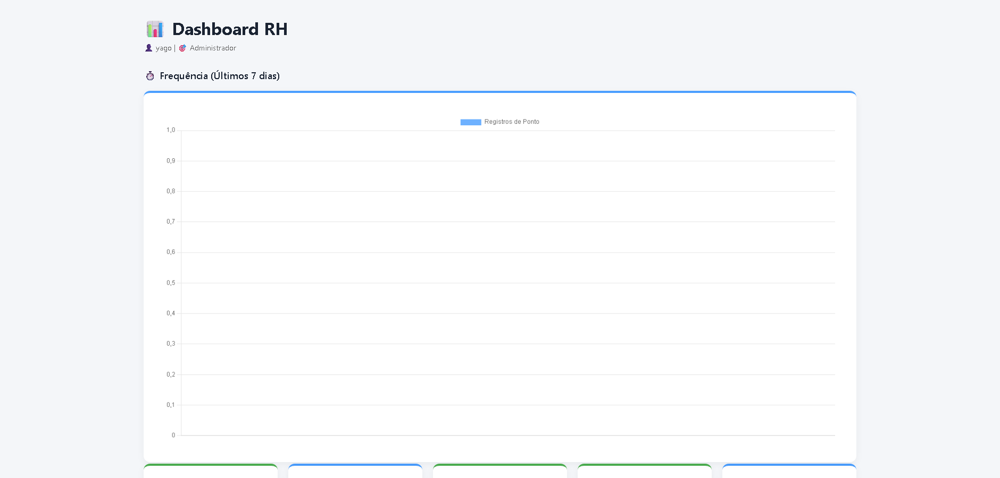

Sistemas empresariais
ERP, RH, estoque, financeiro, agenda, pedidos e painéis administrativos.
- Fluxos personalizados
- Permissões e auditoria
- Relatórios e indicadores
Desenvolvo sistemas web, PDV, SaaS, aplicativos e integrações para transformar operações manuais em processos digitais mais rápidos, organizados e escaláveis.
Projetos apresentados com contexto e nível de maturidade real — sem vender como pronto aquilo que ainda está em evolução.
O objetivo não é apenas entregar telas. É modelar o processo, construir a solução e deixar uma base que possa evoluir com o negócio.
ERP, RH, estoque, financeiro, agenda, pedidos e painéis administrativos.
PDV, catálogo, caixa, pedidos, delivery e operação multiunidade.
Transformação de uma solução em produto para vários clientes.
Conexão entre sistemas, pagamentos, calendários, notificações e serviços externos.
Em vez de uma parede de cards, os principais projetos aparecem como cases: imagem real, contexto, stack e estágio de maturidade.

SaaS Laravel para lanchonetes e restaurantes, com multi-tenant, pedidos, caixa, pagamentos, estoque, relatórios e operação por canais.

Gestão de pessoas com dossiê, onboarding, offboarding, documentos, pendências e múltiplas empresas.


Backend e operação de varejo com PDVs, pedidos e fluxo comercial.
Agenda, serviços e operação de salão com foco em experiência simples e fluxo de atendimento.
Plataforma para campeonatos, jogos, marketplace e comunidade.
Experiência mobile para venda, leitura de códigos e fluxo de caixa.
Disponibilidade baseada em calendário para reduzir conflitos de ocupação.
Experiência digital para agenda, serviços e atendimento.
Um projeto aparecer aqui não significa automaticamente que ele está pronto para produção.
Tem entrega pública e pode ser apresentado como case, site ou demo controlada.
Já existe uma base forte, mas ainda estamos fechando segurança, concorrência, integridade ou operação.
Produto em evolução, usado para validar arquitetura, experiência e próximos ciclos.
Da descoberta à evolução, cada etapa existe para evitar retrabalho e aproximar o software da operação real.
Mapear problema, usuários, regras e objetivo antes de escrever código.
Definir escopo, arquitetura, dados, integrações e decisões técnicas.
Desenvolver backend, frontend, mobile e integrações com foco no fluxo real.
Testar permissões, concorrência, integrações, experiência e cenários de erro.
Corrigir riscos de segurança, integridade e operação antes de chamar de pronto.
Medir, aprender e adicionar novas capacidades sem perder a base do produto.
O diferencial está em unir visão de produto, engenharia e entendimento do processo que precisa funcionar no dia a dia.
Uma solução boa não termina no deploy. Ela precisa ser compreensível para quem usa, segura para quem administra e preparada para crescer.
Entendo como a operação funciona hoje e transformo isso em requisitos realmente úteis.
Evito soluções frágeis ou descartáveis quando o objetivo é construir um produto reutilizável.
Funcionar é o começo. Validar, endurecer e preparar a evolução faz parte da entrega.
Me conte o problema, como sua operação funciona hoje e o que você gostaria de melhorar. A conversa começa pelo negócio, não pela tecnologia.